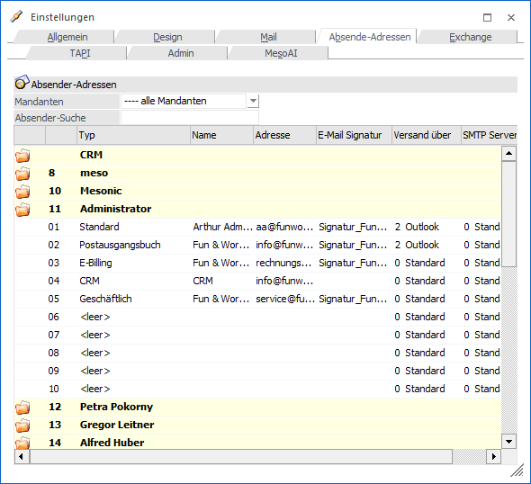
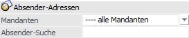
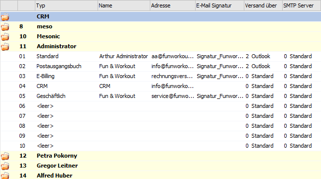
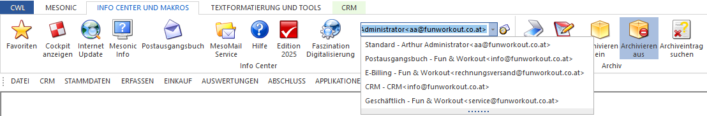

In dem Register "Abs-Adressen" können alternative Absender-Email-Adressen hinterlegt werden. Diese Email-Adressen werden abhängig von User, Mandant und Wirtschaftsjahr abgespeichert.
Achtung
Der Bereich "CRM" bildet eine Ausnahme. Diese Adresse wird als Absender eingesetzt, wenn über eine CRM-Aktion bzw. ein CRM-Workflow ein Email versendet wird. Diese Adresse wird für alle Benutzer, sowie in den globalen Einstellungen unter "WinLine ADMIN - Web Edition - CRM Kontakt" als Absenden Mail für CRM-Mails gesetzt.

Absender-Adressen

Ø Mandanten
Über die Mandanten-Auswahlbox kann definiert werden, für welchen Mandanten die folgenden Absender-Adressen gelten sollten. Die Prioritätenfolge für die Absender-Email-Adressen wird wie folgt angewendet:
ü 1. Adresse für den einzelnen Mandanten
ü 2. Adresse für alle Mandanten
ü 3. Standardadresse (WinLine ADMIN - Benutzeranlage - Feld "SMTP Mailabsender") oder bei CRM (WinLine ADMIN - Web Edition - CRM Kompakt - Feld "Absender Mail")
Ø Absender-Suche
An dieser Stelle kann durch die Eingabe des Benutzernamens die Tabelle der Absender-Adressen eingeschränlt werden.
Hinweis
Die Suche steht nur WinLine Benutzer des Typs "Administrator" oder mit der Administratorenberechtigung "Datenadministration" zur Verfügung.
Tabelle "Absender-Adressen"

In der Tabelle können pro Benutzer die Adressen definiert werden. Ob dabei alle, oder nur der eigene Benutzer angezeigt wird, ist vom aktuellen Benutzer abhängig (WinLine Benutzer des Typs "Administrator", oder mit der Administratorenberechtigung "Datenadministration" sehen alle Benutzer).
Innerhalb eines Benutzers ist zwischen vier fixen und sechs frei zu definierenden Adressen zu unterscheiden. Bei fixen Einträgen ist die Spalte "Absender-Adressen-Typ" nicht editierbar.
Für die automatische Verwendung von Signaturen können diese bei den Absender-Adressen hinterlegt werden.
Dort kann mittels Matchcode der zuvor angelegte Textbaustein unter E-Mail-Signatur ausgewählt werden.
Ø Standard (fix)
Dies ist die bisher verwendete Absender-Email-Adresse aus der Benutzeranlage des WinLine ADMINs. Hierbei wurde immer der Username als sogenannter "Friedly-name" für den Email-Versand herangezogen. Dieser kann nun durch die E-Mail-Adressen-Verwaltung alternativ hinterlegt werden.
Hinweis
Wenn diese Email-Adresse geändert wird, so wird diese auch in die globale Einstellung des Benutzers (WinLine ADMIN - Benutzeranlage - SMTP Mailabsender) zurückgeschrieben.
Ø Postausgangsbuch (fix)
Wenn das Postausgangsbuch geöffnet wird, so wird automatisch diese Email-Adresse als Absender-Adresse ausgewählt.
Ø E-Billing (fix)
Beim Versenden von E-Billing-Rechnungen wird diese Email-Adresse als Absender gewählt.
Ø CRM (fix)
Diese Adresse wird als Absender eingesetzt, wenn über eine CRM-Aktion bzw. ein CRM-Workflow ein Email versendet wird. Diese Adresse wird in den globalen Einstellungen des WinLine ADMINs unter "Web Edition - CRM Kompakt" als Absender Mail hinterlegt.
Hinweis
Über den statischen Benutzer "CRM" können WinLine Benutzer des Typs "Administrator" oder mit der Administratorenberechtigung "Datenadministration" die Adresse auch direkt in diesem Fenster ändern.
Ø <leer> (frei definierbar)
Hierbei kann (zusätzlich zu Absender-Name und Absender-Adresse) der Absender-Adressen-Typ editiert werden. Diese frei auswählbaren Adressen können in der Email-Auswahl-Combo manuell ausgewählt werden.
Ø E-Mail Signatur
Wurde ein Signatur-Textbaustein angelegt, kann dieser hier über den Matchcode ausgewählt und pro Absender hinterlegt werden.
Ø Versand über
In dieser Spalte kann definiert werden, welche der möglichen Versandarten pro Typ genommen werden soll:
ü 0 - Standard (siehe auch Register Mail)
ü 1 - MAPI
ü 2 - Outlook
ü 3 - SMTP
Ø SMTP Server
Soll der Versand via SMTP umgesetzt werden, so kann in dieser Spalte selektiert werden, welche der SMTP-Server Optionen (siehe auch Register Mail) zum Einsatz kommen soll.
Hinweis:
Der Eintrag "CRM" kann in der Tabelle nur im obersten Eintrag - also im Haupteintrag der CRM-Zeile - abgeändert werden. Bei den einzelnen Benutzern dient die Zeile "CRM" zu reinen Information.
Manuelle Auswahl der Absender-Adresse
Die manuelle Auswahl einer alternativen Absender-Adresse erfolgt im Ribbon "INFO CENTER UND MAKROS". In diesem gibt es die Auswahlbox "Absende-Adresse" über welche die Adresse definiert werden kann.
